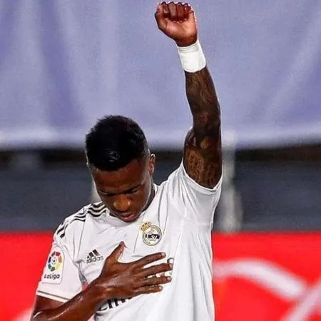

Racismo no Futebol
Vinícius Jr. tem sido alvo de racismo em várias ocasiões, tanto em jogos nacionais quanto internacionais. Esses incidentes destacam a necessidade urgente de combater o racismo no esporte.
Aqui estão alguns dos incidentes mais notáveis:
-
24 de outubro de 2021: Durante um clássico contra o Barcelona no Camp Nou, Vinícius foi alvo de ataques racistas por parte de um torcedor. O caso foi denunciado às autoridades espanholas, mas acabou sendo arquivado devido à falta de identificação do agressor.
-
14 de março de 2022: Em um jogo contra o Mallorca, Vinícius marcou um gol e foi novamente vítima de xingamentos racistas. As autoridades espanholas arquivaram as acusações, afirmando que não constataram crime de ódio.
-
22 de maio de 2023: Em um jogo contra o Valencia, Vinícius foi alvo de abusos racistas por parte dos torcedores do Valencia. Ele tentou chamar a atenção do árbitro para os torcedores que o estavam xingando, mas acabou sendo expulso por conduta violenta. Após o jogo, ele criticou a La Liga e a federação espanhola por não tomar medidas mais eficazes contra o racismo.
-
Outros incidentes: Vinícius mencionou que sofreu racismo várias vezes durante sua carreira na Espanha, afirmando que "o racismo é normal na La Liga".

Carreira e Conquistas
Vinícius Júnior, conhecido como Vini Jr., é um talentoso jogador de futebol brasileiro que atualmente joga pelo Real Madrid e pela Seleção Brasileira.
Informações Pessoais:
- Nome Completo: Vinícius José Paixão de Oliveira Júnior
- Data de Nascimento: 12 de julho de 2000
- Local de Nascimento: São Gonçalo, Rio de Janeiro, Brasil
- Altura: 1,76 m
- Peso: 73 kg
- Posição: Ponta-esquerda
- Pé: Direito
Carreira:
- Clubes de Juventude: Flamengo (2005-2017)
- Clubes Profissionais: Flamengo, Real Madrid Castilla, Real Madrid (2018-presente)
- Seleção Nacional: Sub-15, Sub-17, Sub-20, Sub-23, Seleção Principal
Conquistas:
- Copa América Sub-15: Ouro (2015)
- Copa América Sub-17: Ouro (2017)
- Copa América: Prata (2021)
- UEFA Champions League: Bicampeão (2022)
- La Liga: Campeão (2021-2022)
Curiosidades:
- Venda Recorde: Em 2017, foi vendido ao Real Madrid por 45 milhões de euros, sendo a segunda maior venda da história do futebol brasileiro na época.
- Gol da Vitória: Marcou o gol da vitória na final da UEFA Champions League de 2022.
- Ballon d'Or: Ficou em 2º lugar na premiação de 2024.
Vida Pessoal: Vinícius vem de uma família humilde e teve o apoio do tio e do Flamengo desde cedo. Ele é conhecido por seu temperamento calmo e sua habilidade de driblar adversários.